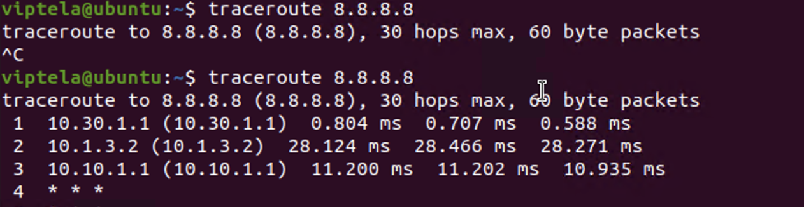

Task 3 - Internet Access for All Sites
In the Task we will enable internet access on Site-100 on VPN-10. Further we will propagate default route from Site-100 towards Site-400 (& Site-300) on VPN-10. This default route will result in Site-400 (& Site-300) to use Site-100 as default gateway on VPN-10.
Hence Site-400 will route internet traffic through Site-100 by sending traffic over the SD-WAN Fabric.
Step 1 – Verify no internet access on VPN-10 of Site-400 and Site-300
- On the RDP session, launch
mRemoteNGapplication. This application is used to get Console access to all of the Ubuntu machines (Virtual Machines / hosts) that are located on the respective LANs (VPNs) of the SD-WAN sites.

- To login the console of VM named
Site400-Ubuntu-VPN10, click on it's name onmRemoteNGapplication under theVNC Sessions. As the name indicates, this VM exists on VPN-10 (LAN segment) of Site-400.

-
The console of Ubuntu host/VM may be initially locked, click on the console and use below credentials to login to the Desktop of Ubuntu VM:
Username:
ubuntu
Password:viptela -
Launch
Chromium Web Browseron Desktop of this Ubuntu machine by clicking on it's icon as shown below:
- Try to access internet websites such as
cisco.com. As expected, access to the website will fail.

-
Launch
Terminalapplication on the console of Ubuntu VM by clicking on it's icon on the desktop (You can also see the icon for Terminal application after the next step). -
On the
Terminalapplication try to ping a server on internet by issuingping 8.8.8.8command and pressContrl+Cafter few seconds to stop the ping. As expected ping will fail and there will be 100% packet loss.

- Use
mRemoteNGapplication to logon the console of VM namedSite300-Ubuntu-VPN10. Repeat the above steps to verify that there is no internet access on this Ubuntu VM as well.
Step 2 - Enable Internet on VPN-10 of Site-100
Now let's enable internet access on Site-100 for VPN-10. This is done by routing traffic from VPN-10 to the Global Routing Table (GRT) i.e., VPN-0.
- Launch
MTPuttyapplication from the Desktop icon or from Taskbar of your RDP session (i.e., on Jumphost)
-
On MTPutty application logon, via SSH, to
Site400-cE1cEdge by clicking on the respective names under savedPutty sessions. When prompted use below credentials for authentication:Username:
admin
Password:admin -
Use the below command to verify routing table for both node. It can be verified from the output that there is no default route in VRF-10.
show ip route vrf 10
Below screenshot from Site-400 confirms lack of default route on VRF/VPN-10:

Now on Site100-cE1 node let's add a default route in VPN-10 pointing to VPN-0 (i.e., GRT). This is done by modifying the Feature Template for VPN-10 on vManage GUI as per below steps.
- On vManage, navigate to Configuration > Templates as shown below:

- Then click on
Feature Templatestab as shown in below screenshot:

-
Then on the
search bar, search for Template name ofVPN_10_05-09-2022_17-18-00_vedge-C8000V_1201 -
Then Click on the three dots
...on the right side of this feature template and clickEditas shown below:

- On the next page click on
IPv4 Routeas shown below:

-
In the
IPv4 Routesection, perform below configurations:- Click
New IPv4 Route - In Prefix Enter:
0.0.0.0/0 - In Gateway, select
VPNbutton - In Enable VPN select
Globalfrom drop down menu - Then set Enable VPN to
On

- Click
-
Then set Enable VPN to
On- Further click
Addbutton - Next, click on
Updatefor these changes to be accepted
- Further click

- Then click
Nextto proceed forward with configuration

- Click
Configure Devicesat the bottom of the page to push the configuration from vManage towards cEdge:

- Lastly, wait and verify that Config-Push from vManage to cEdge device is
Successas shown below:
Step 3 - Default Route Propagation from Site-100 on VPN-10
Above step configured routing of VPN-10 traffic to Global Routing Table (VPN-0) on Site100-cE1. Now let's also propagate default route from Site-100 towards other site over SD-WAN Fabric.
- On vManage, navigate to Configuration > Templates:
- Then click on
Device Templatestab:

- Click on the three dots (
...) at the right side ofSite-100Device Template

- Click on
Additional Templatesto navigate to that section as shown below:

- From the
CLI Add-on Templatedropdown menu selectCreate Templateas shown below:

- Enter the following information (also shown in below screenshot):
- Template Name:
Default-Route-Propagation - Description:
Default Route Propagation - In
CLI configurationenter box the following commands: ~~~ router ospf 10 vrf 10 default-information originate ~~~ - And then click
Saveas shown in below screenshot:
- Template Name:

-
Click
Update,Nextand thenConfigure Devices: -
Wait for
Successmessage confirming that configurations are pushed by vManage and applied successfully by cEdge.
Now a default route on VRF/VPN-10 towards Site-100 over SD-WAN fabric has been configured.
Step 4 - Verify Internet Connectivity on VPN-10 of Site-400
- If MTPutty application has closed then launch it again on your RDP session:
-
SSH/Login to
Site400-cE1andSite300-cE1cEdges by clicking on their respective names in the savedPutty sessions -
Use the below command to verify routing table for both node. Both nodes (Site300-cE1 and Site400-cE1) are recevining default route on VRF/VPN-10
show ip route vrf 10
- Below screenshot from
Site-400confirms that default route appears:

-
Logon again to Ubuntu with hostname of
Site400-Ubuntu-VPN10again on the mRemoteNG application -
Launch
Chromium Web browseron the Ubuntu VM and navigate to Internet site such ascisco.com. This time the internet access should work properly as shown below:

- Open
Terminalapplication on the Ubuntu VM and issue below ping command:
ping 8.8.8.8
This time the ping should be successful as shown below:

- On the Terminal application on Ubuntu VM perform a
tracerouteusing the following command:
traceroute 8.8.8.8

- Repeat these steps to confirm internet access for VPN-10 of Site300 (verify ip route on VPN-10 on
Site300-cE1and then verify internet connectivity on Ubuntu VMSite300-Ubuntu-VPN10)